日向翔陽 Hinata Shouyou 聲優:村瀨步
生日:6月21號
身高:162.8公分
體重:51.9公斤
星座:雙子座
背號:10
位置:副攻手MB
就讀高中:烏野高中1年1組
喜歡的食物:白飯拌雞蛋
最近的煩惱:不能用一隻手抓住球
擁有超群的反應,速度,彈跳力等能力,彌補了身高的不足
烏野高中排球社攔網員,是烏野的"最強的誘餌"
目標是成為烏野高中的王牌
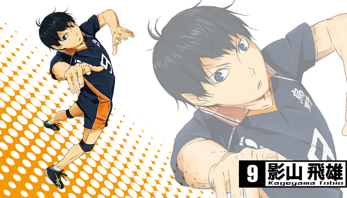影山飛雄 Kageyama Hiyu 聲優:石川界人
生日:10月22號
身高:180.6公分
體重:66.3公斤
星座:魔羯座
背號:9
位置:二傳手S
就讀高中:烏野高中1年3組
喜歡的食物:豬肉咖哩溫泉蛋飯組合
最近的煩惱:非常在意自己被動物討厭了
擁有超群的球感,控球能力,和敏銳的判斷力,比誰都能冷靜的看透敵方陣營的動作
以前是北川第一中學的排球隊二傳手,人稱"球場上的王者",本人非常討厭這個稱呼
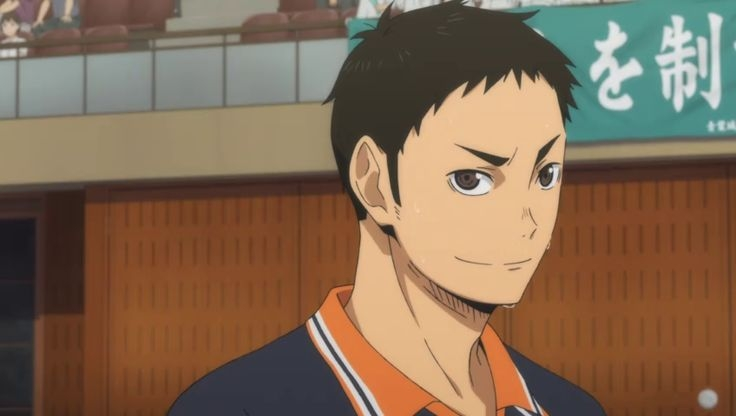澤村大地 Sawamura Daichi 聲優:日野聰
生日:12月31號
身高:176.8公分
體重:70.1公斤
星座:魔羯座
背號:1
位置:排球部主將,主攻手WS
就讀高中:烏野高中3年4組
喜歡的食物:醬油拉麵
最近的煩惱:頻繁夢到教導主任的假髮飛起來
善於接球,有著非比尋常的防守力
目標是恢復烏野,奪得全國大賽冠軍
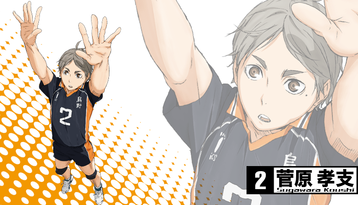菅原孝支 Sugawara Koushi 聲優:入野自由
生日:6月13號
身高:174.3公分
體重:63.5公斤
星座:雙子座
背號:2
位置:排球部副主將,二傳手S
就讀高中:烏野高中3年4組
喜歡的食物:超辣麻婆豆腐
最近的煩惱:有好多比自己高大的後輩
擁有強大的包容心,能夠活用大家特色進行攻擊
善於鼓舞隊友,讓隊友找回平常心
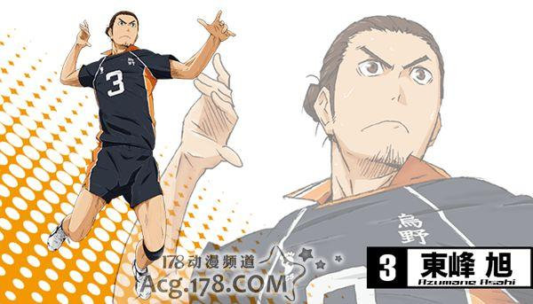東峰旭 Asahi Azumane 聲優:細谷佳正
生日:1月1號
身高:184.7公分
體重:75.2公斤
星座:魔羯座
背號:3
位置:主攻手WS
就讀高中:烏野高中3年3組
喜歡的食物:豬排拉麵
最近的煩惱:就算說自己是學生都沒人相信
雖然外表很凶狠,但是內心很脆弱
烏野的"王牌"
菅原孝支 Sugawara Koushi 聲優:入野自由
生日:6月13號
身高:174.3公分
體重:63.5公斤
星座:雙子座
背號:2
位置:排球部副主將,二傳手S
就讀高中:烏野高中3年4組
喜歡的食物:超辣麻婆豆腐
最近的煩惱:有好多比自己高大的後輩
擁有強大的包容心,能夠活用大家特色進行攻擊
善於鼓舞隊友,讓隊友找回平常心
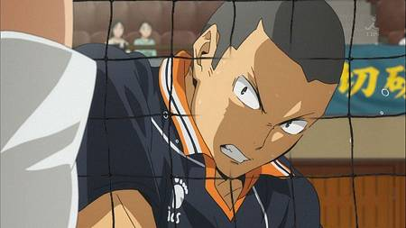田中龍之介 Ryunosuke Tanaka 聲優:林勇
生日:3月3號
身高:177.2公分
體重:68.8公斤
星座:雙魚座
背號:5
位置:主攻手WS
就讀高中:烏野高中2年1組
喜歡的食物:波羅麵包
最近的煩惱:想告訴在校園裡迷路的一年級女生教室在哪,一搭話她就哭了
曾把日向叫作"小不點一號"
力量在球隊中僅次於東峰,是烏野第二強的主攻手,擁有著被逼到絕境時也絲毫不影響表現的強韌抗壓性
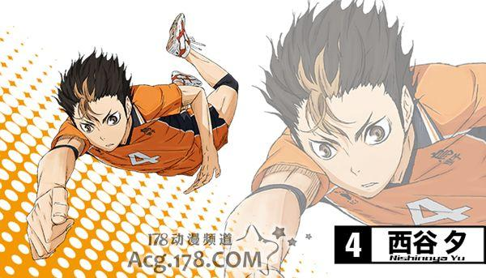西谷夕 Yuu Nishinoya 聲優:岡本信彥
生日:10月10號
身高:159.3公分
體重:51.1公斤
星座:天秤座
背號:4
位置:自由人L
就讀高中:烏野高中2年3組
喜歡的食物:嘎哩嘎哩君(蘇打味)--琦玉縣名產,超有名的雪糕
最近的煩惱:沒有!!!
烏野的"守護神"
靠本能行動的天才,但不擅長傳授他人技術
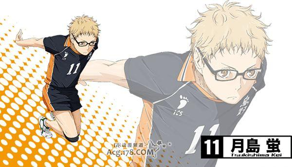月島螢 Kei Tsukishima 聲優:內山昂輝
生日:9月27號
身高:188.3公分
體重:68.4公斤
星座:天秤座
背號:11
位置:副攻手MB
就讀高中:烏野高中1年4組
喜歡的食物:草莓蛋糕
最近的煩惱:就算進了高中還是有人問名字後半怎麼讀
性格腹黑且毒舌
認為世上有即使努力也做不到的事,天生的缺陷是無法彌補的
接球很弱,本人曾表示討厭接球,非常善於使用假動作
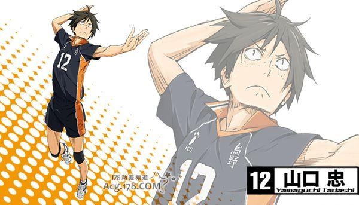山口忠 Tadashi Yamaguchi 聲優:齊藤壯馬
生日:11月10號
身高:179.5公分
體重:63.0公斤
星座:天蠍座
背號:12
位置:副攻手MB
就讀高中:烏野高中1年4組
喜歡的食物:鬆軟的炸馬鈴薯
最近的煩惱:即使被可愛的女生搭話也都是關於月島的話題
是烏野排球隊中唯一一個不是先發球員的一年級,為了改變現狀開始學習跳躍飄球
總是跟著月島行動,稱呼月島為"月"

緣下力 Ennoshita Chikara 聲優:增田俊樹
生日:12月26號
身高:175.4公分
體重:66.4公斤
星座:魔羯座
背號:6
位置:主攻手WS
就讀高中:烏野高中2年4組
喜歡的食物:海鞘醋
最近的煩惱:別人說他在很有氣勢時,看起來依然像沒睡飽
性格老實,由於沉溺於過去的安逸因為害怕而逃走,稱自己為"無情的二年級"
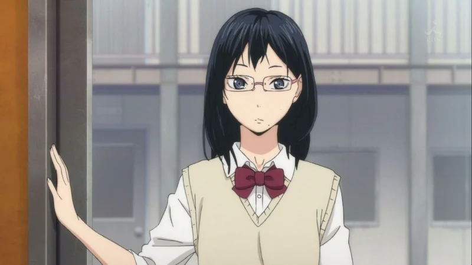清水潔子 Kiyoko Shimizu 聲優:名塚佳織
生日:1月6號
身高:166.2公分
體重:51.4公斤
星座:魔羯座
就讀高中:烏野高中3年2組
喜歡的食物:炸蝦壽司
最近的煩惱:茶點是吃百樂滋好呢還是百奇好呢?
隊內經理,有一頭秀麗的黑髮,左嘴角下有一顆痣,帶著眼鏡的美女
是其他學校也有傳聞的美女經理,戴眼鏡給人知性的印象,很少說話
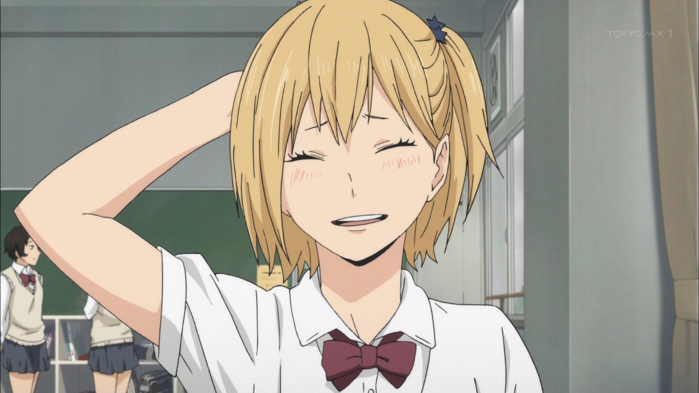谷地仁花 Yachihitoka 聲優:諸星堇
生日:9月4號
身高:149.7公分
體重:42.5公斤
星座:處女座
就讀高中:烏野高中1年5組
喜歡的食物:和果子
最近的煩惱:如果碰上要死了的情況該怎麼辦
隊內新經理,妄想系女子
受翔陽和飛雄的請求而輔導兩人學習
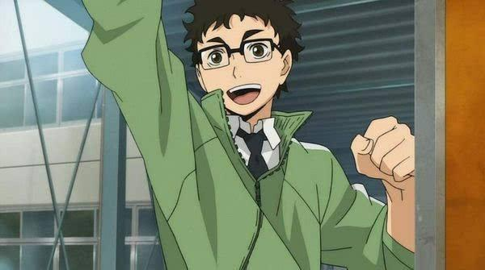武田一鐵 KIttetsu Takeda 聲優:神谷浩史
生日:1月6號
身高:166.5公分
體重:59.4公斤
星座:魔羯座
年齡:29歲
所教科目:現代文
喜歡的食物:馬鈴薯燉肉
最近的煩惱:被學生說"老師的眼鏡好老土"
新上任的排球顧問兼監督,沒有任何排球經驗,目前學習中
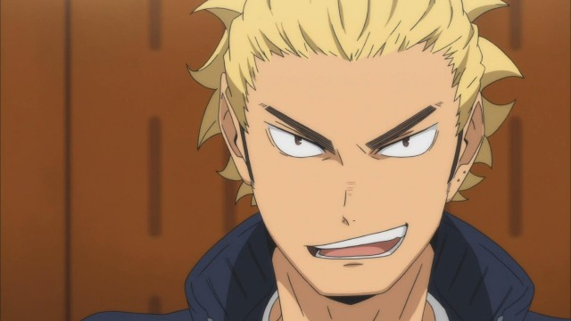烏養繫心 Keishin Ukai 聲優:田中一成
生日:4月5號
身高:178.2公分
體重:72.2公斤
星座:白羊座
曾就讀高中:烏野高中
年齡:26歲
最近的煩惱:茶點是吃百樂滋好呢還是百奇好呢?
烏野高中排球部教練,現為坂之下商店的收銀員,是烏氧教練的孫子